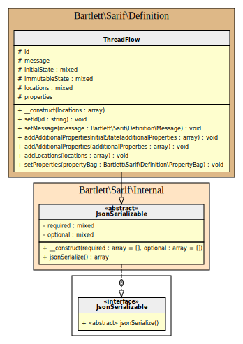

threadFlow object
A threadFlow object is a sequence of code locations that specify a possible path through a single thread of execution
such as an operating system thread or a fiber.

Example
{
"$schema": "https://json.schemastore.org/sarif-2.1.0.json",
"version": "2.1.0",
"runs": [
{
"tool": {
"driver": {
"name": "CodeScanner",
"semanticVersion": "1.1.2-beta.12",
"informationUri": "https://codeScanner.dev"
}
},
"results": [
{
"message": {
"text": "A result object"
},
"codeFlows": [
{
"threadFlows": [
{
"locations": [
{
"location": {
"physicalLocation": {
"artifactLocation": {
"uri": "ui/window.c",
"uriBaseId": "SRCROOT"
},
"region": {
"startLine": 42
}
}
},
"state": {
"x": {
"text": "42"
},
"y": {
"text": "54"
},
"x+y": {
"text": "96"
}
},
"nestingLevel": 0,
"executionOrder": 2
}
],
"id": "thread-123",
"message": {
"text": "A threadFlow object"
}
}
],
"message": {
"text": "A codeFlow object"
}
}
]
}
]
}
]
}
How to generate
See examples/.php script.
See full examples/codeFlow.php script into repository.
<?php declare(strict_types=1);
use Bartlett\Sarif\Definition\ArtifactLocation;
use Bartlett\Sarif\Definition\Location;
use Bartlett\Sarif\Definition\Message;
use Bartlett\Sarif\Definition\MultiformatMessageString;
use Bartlett\Sarif\Definition\PhysicalLocation;
use Bartlett\Sarif\Definition\Region;
use Bartlett\Sarif\Definition\ThreadFlow;
use Bartlett\Sarif\Definition\ThreadFlowLocation;
$threadFlowLocation = new ThreadFlowLocation();
$location = new Location();
$artifactLocation = new ArtifactLocation();
$artifactLocation->setUri('ui/window.c');
$artifactLocation->setUriBaseId('SRCROOT');
$physicalLocation = new PhysicalLocation($artifactLocation);
$physicalLocation->setRegion(new Region(42));
$location->setPhysicalLocation($physicalLocation);
$threadFlowLocation->setLocation($location);
$threadFlowLocation->addAdditionalProperties([
'x' => new MultiformatMessageString('42'),
'y' => new MultiformatMessageString('54'),
'x+y' => new MultiformatMessageString('96'),
]);
$threadFlowLocation->setNestingLevel(0);
$threadFlowLocation->setExecutionOrder(2);
$threadFlow = new ThreadFlow([$threadFlowLocation]);
$threadFlow->setId('thread-123');
$threadFlow->setMessage(new Message('A threadFlow object'));